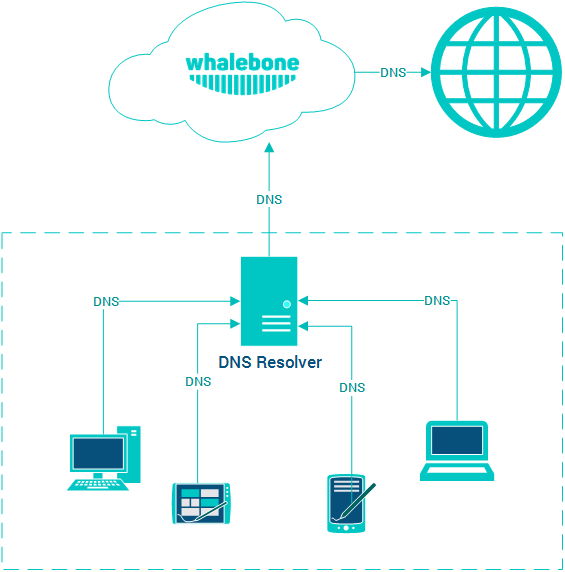
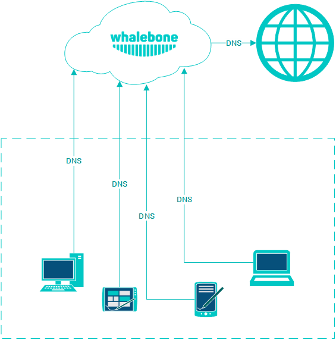
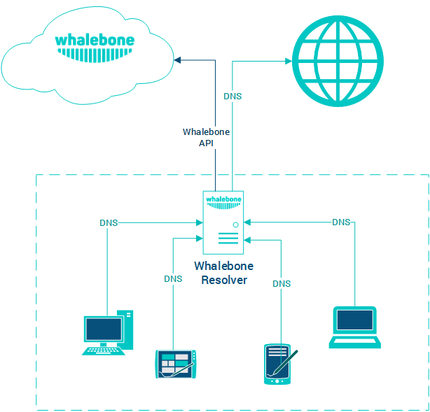

Deployment options
Whalebone could be deployed in several scenarios which can be even combined to satisfy requirements of particular networks. Combination of cloud and local DNS resolver with single management console will satisfy even complex and distributed networks.
Tip
All of the options below could be combined together. Various network segments and zones could have different requirements and possibilities.
Tip
Should you believe none of the scenarios below is applicable to your use case, please contact Whalebone and we will help you with architecture that will suite your needs.
Cloud DNS
This is the simplest method o deployment. To use Whalebone filtering, just change the configuration of your recent DNS resolvers and point them to Whalebone cloud resolvers. The downside of this deployment is that all of the incidents will be visible with source IP of the DNS forwarder instead of the original source IP. Still this deployment could come in handy if the priority is to prevent the threats with as low effort and infrastructure changes as possible.
Cloud DNS (direct connection)
This deployment is similar to forwarding the requests to Whalebone cloud resolvers, but the requests are sent directly to the cloud without local DNS cache. This could be usually set for all endpoints through DHCP. However not using local DNS cache means increased latency introduced by the network communication between the client and cloud resolver. If the individual machines are not hidden behind a NAT, their IP addresses will be directly visible in the Whalebone reporting and the clients could be easilly distinguished.
Local DNS resolver
This deployment scenario uses local Whalebone resolver, that communicates with Whalebone cloud through API. The DNS resolution takes place directly on the resolver and is completely independent on the cloud availability. Should the resolver not be able to reach the cloud service, it won’t be able to update the threat intelligence and to reports any incidents. The main advantage of this deployment is visibility into local network and individual IP addresses and native DNS resolver latency.
Local DNS forwarder
Very similar deployment scenario as the local resolver, however Whalebone just forwards the requests to preconfigured resolvers. This scenario is very useful in case there are local DNS zones that has to be available for the clients (e.g. Active Directory) or cases when the recent resolver configuration is very specific and has to be preserved. This deployment has also lower hardware requirements, roughly half of the CPU and RAM recommended.
Warning
We don’t recommend to forward the requests to Whalebone cloud resolvers. Such configuration would result in duplicit incident detection, no added security and unnecesary latency for the clients.